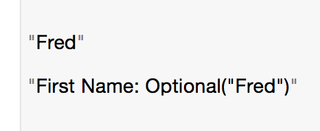
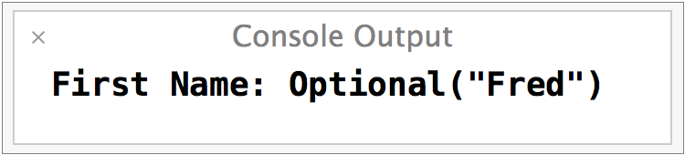
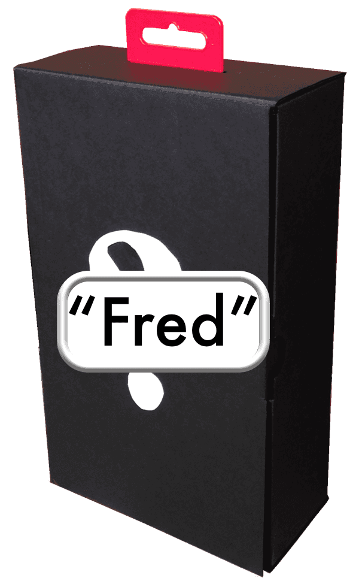

Interesting! It works but there's something else going on.

We see the same output in the Console.
They are not some theoretical abstract concept that exists in only in the compiler. They are real things like a Double or a String. In this example there's something the box.

Optionals are really a Swift enum that is wrapped around the variable. We are not seeing the real variable, just it's wrapper.
When we use a println() we aren't outputting the variable, we only see the Optional.
When we want the real variable we have to unwrap it. There are many ways to unwrap an Optional. The right one to use depends on the data and the circumstances.
The first way we'll learn is the simplest and the most dangerous. We can force an Optional to unwrap and give us its value like this.
1 2 3 4 5 | // Unwrapping a variable
firstName = "Fred"
println(firstName!)
|